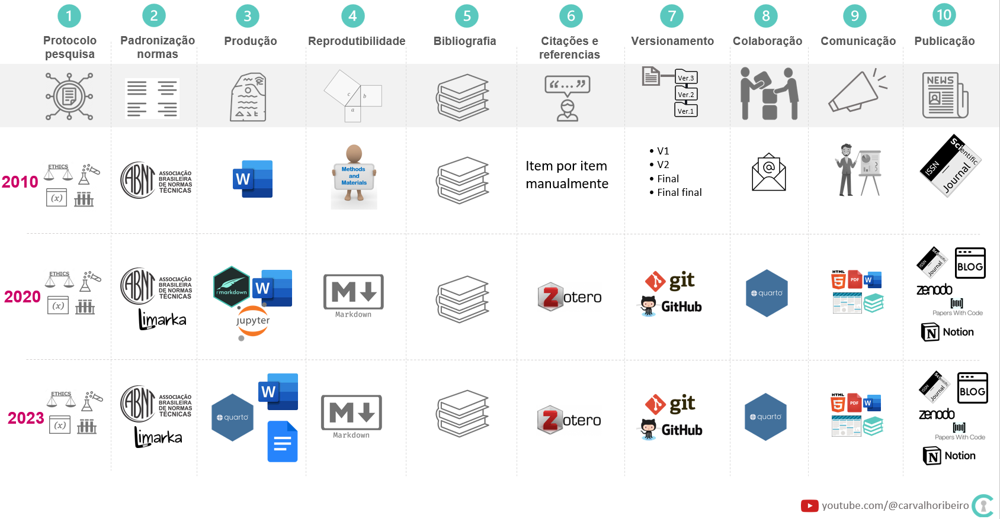

yml
---
title: "Minha pesquisa"
author: "Marcelo Carvalho"
format:
revealjs:
chalkboard: true
multiplex: true
editor: visual
execute:
echo: true
---Comunicar resultados no formato apresentação de slides em reveljs
Marcelo Carvalho dos Anjos
July 16, 2023
Vídeo tema para este post em Comunicar trabalhos técnicos em apresentações no R com Quarto
Quarto no formado de apresentações de slides em reveljs.Pacotes
Para reproduzir os códigos abaixo serão necessários os pacotes tidyverse, sjplot, gt, gtExtras e [funModeling](gt{target=“_blank”}
Dados
O conjunto de dados é o gapminder disponível no pacote gapminder , no R podendo ser acessado via código install.package("gapminder)
Time line das ferramentas disponíveis ao longo do tempo

Código reproduzível
O YML file é o cabeçalho do documento onde colocamo o título entre outros detalhes do documento como por exemplo as configurações globais que serão reproduzidas nas demais partes do documento.
O resumo geralmente consiste em textos e pequenos códigos inline
resumo
## Resumo - SLIDE1
- Apresentações são formas comums de comunicação de resultados de expementos
- Existem muitas ferramentas disponíveis
- Este exercício vai mostrar algumas `quarto` e `reveljs`
## Objetivo - SLIDE2
- Facilitar a publicação de experimentos realizados por pesquisadores e melhoristas de processos
## Pacotes - SLIDE3
- Neste trabalho foram usados os seguintes pacotes do R
#Código inserido no code-chunk
library(tidyverse)
library(tidymodels)
library(janitor)
library(gapminder)
#Resultado gerado
#> 1. Facilita o manuseio de dados
#> 2. Facilita a construção de modelos
#> 3. Facilita a padronização dos nomes das variáveis
#> 4. Concentra os dados que serão usados no exercícioO corpo consiste em código reproduzível
corpo
## Dados - SLIDE4
- A base de dados utilizada será a `Gapminder`
- Possui `r nrow(gapminder)` linhas e `r ncol(gapminder)` colunas.
- Os detalhes da estrutura são apresentados abaixo
## gerar os detalhes da estrutura de dados
gapminder %>% glimpse()
## Exploração - SLIDE5
gapminder %>% funModeling::df_status()
## Método - SLIDE6
$$
Y_i= \beta_0 + \beta_1 X_i + \epsilon_i
$$
$Y_i$= Variável dependente
$\beta_0$= Constante ou Intercept
$\beta_1$= Coeficiente ou Slope
$X_i$= Variável independente
$\epsilon_i$= Erro (desvio)
## Modelo - SLIDE7
mdl_gapminder <-
gapminder %>%
mutate(qty_year = year - 2007) %>%
group_nest(country) %>%
mutate(mdl = map(data, ~lm(lifeExp~qty_year, data = .x))) %>%
mutate(result = map(mdl, broom::glance)) %>%
select(country, result) %>%
unnest(result)
## Plotar modelo - SLIDE8
#| output-location: slide
#| code-line-numbers: "2|4"
mdl_gapminder %>%
ggplot(aes(x = r.squared, y = fct_reorder(country, r.squared)))+
geom_point()+
scale_y_discrete(guide = guide_axis(check.overlap = TRUE))+
labs(x = NULL, y = NULL)
## Conclusão - SLIDE9
- `r mdl_gapminder %>% filter(country == "Brazil") %>% select(r.squared) %>%
mutate(r.squared = scales::percent(r.squared, accuracy = 0.1))` da
variação na expectativa de vida no Brasil é explicada pela variação do tempo.
- Consigo aprofundar nas pesquisas para compreender se há outros fatores que talvez possam explicar as correlações ?
## Complemento1 - SLIDE10
#| output-location: column
library(gt)
library(gtExtras)
data(FANG,
package = "tidyquant")
data_fang <- FANG
data_fang %>% group_by(symbol) %>%
summarise(price = list(adjusted)) %>%
gt() %>%
gt_plt_sparkline(
price,
same_limit = FALSE,
fig_dim = c(20,40),
type = "ref_median")
## Complemento2 - SLIDE11
library(sjPlot)
mdl_mtcars <- lm(mpg~wt + cyl, data = mtcars)
sjPlot::tab_model(mdl_mtcars)Pesquisadores e profissionais que precisam comunicar suas pesquisas e experimentos.
Melhoristas de processo que precisam de documentos reproduzíveis em seus projetos.
Aperfeiçoar habilidades na comunicação dos resultados dos experimentos..
Facilitar a comunicação entre pesquisadores. Tidyverse usa design for humans ( %>% significa e então).
Melhorar produtividade na manufatura e serviços através da replicação dessas ações e experimentos.